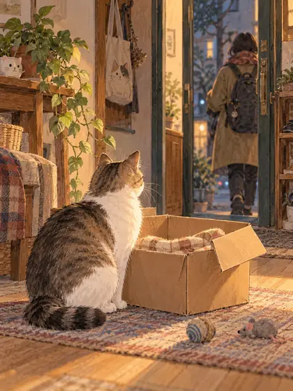
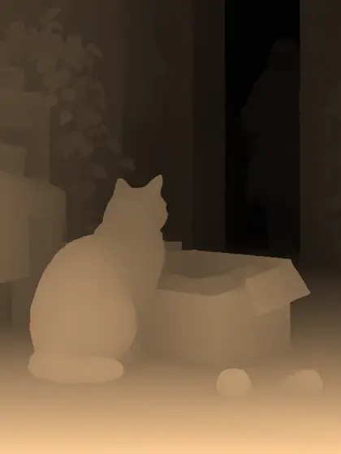

我把这句话交给 30 个 AI 接力。每一棒只看得到上一棒的画，换一个身份，说一句想回家的话，再画下来。传到最后，30 个身份里有 19 个想到了同一样东西。
Thirty AI relay agents pass along one sentence, “I want to go home.” Each sees only the previous picture, takes on a new identity, says one line, and draws the next picture. Below: every baton, its candidate lines, why one was picked, and a text-only relay for comparison.
像传话游戏，但传的是画。每一棒内部是这样走的：
所以这不是一次盲传：共同主题和"挑一句"这两步，都会把内容往温暖的牵挂上推。后面看到的趋同，有一部分来自这里，有一部分来自模型自己。
高亮的是吃的。点"＋"可以看到这一棒的 3 句候选，以及为什么选了这一句。
用同一张身份表，还跑了一条只传文字的接力：每一棒只看得到上一棒的那句话，没有画。两条链起点相同、身份相同，传法不同。
| 棒 · 身份 | 传画的链 | 只传文字的链 |
|---|
口径：句子里出现了具体的吃的，或者"吃"这个字。比如第 13 棒"这炉烤好，带两个回去一起吃"算，第 30 棒"剥栗子"也算。
没有人让它们对话，可第 6 棒的租客说"枕头还在纸箱里，等我回去拆"，第 7 棒的家猫接了一句"纸箱给我留着，我等你回来"。第 9 棒的小学生说"妈妈还等我吃饭呢"，第 10 棒的奶奶接"快进来，给你留的饭还热着呢"。只传文字的那条链里也出现了同样的事：小学生说"奶奶蒸的糖糕该出锅了"，下一棒的奶奶就说"慢点走，粥还在灶上温着"。
赶路的人，总会碰到在家等的人。
两条链各 30 棒，都有 19 棒提到了吃的，没有一句提到房子。AI 没有家，它们想到的家，都是从我们写下的家里学来的。
这次有共同主题引导，也有"挑一句"的筛选。如果把这两步都去掉，让它们真的盲传，30 棒之后还会落在一碗饭上吗？这是下一次想试的。
视频没有重画任何一张图，也没用付费的图生视频。画面的"动"来自景深：先用一个开源小模型估出每张图的远近，镜头移动时前景和背景错开，就有了立体感。

